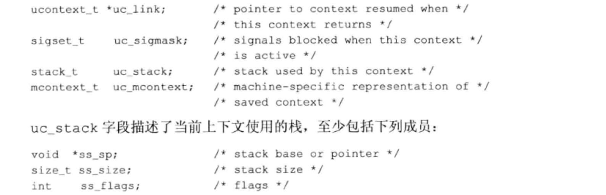
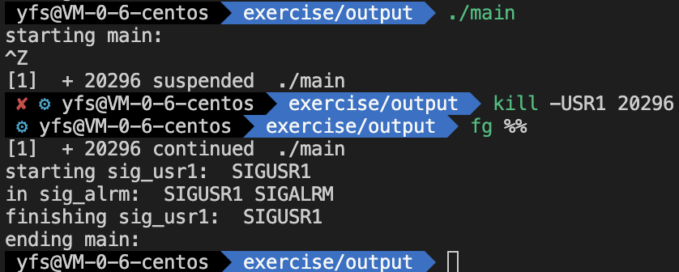

信号集 信号集存储在数据类型 sigset_t 中。
信号集处理函数如下：
函数名
作用
sigemptyset
初始化由set指向的信号集，清除其中所有信号
sigfillset
初始化由set指向的信号集，使其包括所有信号
sigaddset
将以恶搞信号添加到已有的信号集中
sigdelset
从信号集中删除一个信号
sigismember
测试信号集是否包含该信号
信号集变量在使用之前，必须进行初始化，因为 C 会将将不赋初值的外部变量和静态变量都初始化全部为 0，可能产生歧义
实现
若实现的信号数目少于一个整形量所包含的位数，则可用一位代表一个信号的方法实现信号集。
函数 sigprocmask()
函数说明：
检测或更改，或同时进行检测和更改进程的信号屏蔽字。
在调用 sigprocmask 后若有任何未决的、不再阻塞的信号，则在 sigprocmask 返回前，至少将其中之一递送给该进程。
参数说明：
参数名
说明
oset
若oset非空指针，则进程的当前信号屏蔽字通过oset返回
set
若 set 是非空指针，则参数 how 指示如何修改当前信号屏蔽字；若 set 为空指针，则不改变该进程的屏蔽字，how 值无意义
how
见参数 set
函数 sigpending()
函数说明：
获取调用进程的阻塞不能递送的信号（该信号也一定是未决的）。信号集通过 set 参数返回。
1 2 3 4 5 6 7 8 9 10 11 12 13 14 15 16 17 18 19 20 21 22 23 24 25 26 27 28 29 30 31 32 33 34 35 36 static void sig_quit (int signo) { printf ("caught SIGQUIT\n" ); if (signal(SIGQUIT, SIG_DFL) == SIG_ERR) err_exit("can't reset SIGQUIT" ); } int test_sig_set () { sigset_t newmask, oldmask, pendmask; if (signal(SIGQUIT, sig_quit) == SIG_ERR) err_exit("can't cathc SIGQUIT" ); sigemptyset(&newmask); sigaddset(&newmask, SIGQUIT); if (sigprocmask(SIG_BLOCK, &newmask, &oldmask) < 0 ) err_exit("sigprocmask SIG_BLOCK error" ); sleep(5 ); if (sigpending(&pendmask) < 0 ) err_exit("sigpending error" ); if (sigismember(&pendmask, SIGQUIT)) printf ("\nSIGQUIT pending\n" ); if (sigprocmask(SIG_SETMASK, &oldmask, NULL ) < 0 ) err_exit("sigprocmask error" ); printf ("SIGQUIT unblocked\n" ); sleep(5 ); exit (0 ); }
1 2 3 4 5 6 7 8 9 10 11 12 13 14 $ ./main ^\ 产生信号一次（在5s之内） SIGQUIT pending 从 sleep 返回后 caught SIGQUIT 在信号处理程序中 SIGQUIT unblocked 从 sigprocmask 返回后 ^\[1] 15072 quit ./main 再次产生信号 $ ./main ^\^\^\^\^\^\^\^\^\ 产生信号10次（在5s之内） SIGQUIT pending caught SIGQUIT 只产生信号一次 SIGQUIT unblocked ^\[1] 16559 quit ./main 再次产生信号
函数 sigaction()
很多平台的 signal() 都是由 sigaction() 来实现。
函数说明：
参数说明：
参数
作用
signo
要检测或修改其具体动作的信号编号
act
指定信号处理的动作
oact
返回该信号的上一个动作
struct sigaction 结构体介绍：
成员变量名
作用
sa_handler
信号处理程序地址（不能是 SIG_IGN 或 SIG_DFL）
sa_mask
调用信号处理程序前将 sa_mask 包含的信号加入到进程的信号屏蔽字中，在信号处理程序返回时再将信号屏蔽字恢复为原先值
sa_flags
指定了对信号如何进行处理
sa_sigaction
指定了一个替代的信号处理程序，在 sigaction 结构中使用 SA_SIGINFO 标志时，使用该信号处理程序
sa_mask
sa_mask 实现了在进程执行信号处理程序时，自动阻塞自定义的某些信号。
一般，在某种信号阻塞时，若发送多次该信号，在阻塞解除时仅调用对应的信号处理程序一次。
sa_flags
sa_sigaction
sa_sigaction 字段和 sa_handler 字段在使用时仅能出现其中一个。
若设置了 SA_SIGINFO 标志，则按下列方式调用信号处理程序
1 void handler (int signo, siginfo_t *info, void *context) ;
参数 context 可被强制类型转换为 ucontext_t 类型，该结构标识信号传递时进程的上下文。该结构至少包含如下字段：

siginfo 结构
关于 si_code 取值：
如信号是 SIGCHLD，则将设置 si_pid，si_status，si_uid 字段。
示例：
1 2 3 4 5 6 7 8 9 10 11 12 13 14 15 16 17 18 19 20 Sigfunc * signal (int signo, Sigfunc *func) { struct sigaction act , oact ; act.sa_handler = func; sigemptyset(&act.sa_mask); act.sa_flags = 0 ; if (signo == SIGALRM) { #ifdef SA_INTERRUPT act.sa_flags |= SA_INTERRUPT; #endif } else { act.sa_flags |= SA_RESTART; } if (sigaction(signo, &act, &oact) < 0 ) return (SIG_ERR); return (oact.sa_handler); }
函数 sigsetjmp() 和 siglongjmp() 使用 setjmp 与 longjmp 对信号屏蔽字的影响：
当捕捉到一个信号是，进入信号捕捉函数，此时当前信号被自动加到进程的信号屏蔽字中。这阻止了后来产生的这种信号中断该信号处理程序。若用 longjmp 跳出信号处理程序，则信号屏蔽字不会恢复到调用信号捕捉函数之前的屏蔽字。
1 2 3 4 5 6 7 8 9 10 11 12 13 14 15 16 17 18 19 20 21 22 23 24 25 26 27 jmp_buf env_buf; static void sig_handler5 (int signo) { printf ("sig_handler5 starting\n" ); longjmp(env_buf, 1 ); printf ("sig_handler5 ending\n" ); } test_setjmp_longjmp_sigmask(){ sigset_t oset1, oset2; if (sigprocmask(0 ,NULL , &oset1) == -1 ) err_exit("sigprocmask error" ); printf ("print oset1\n" ); if (signal(SIGALRM, sig_handler5) == SIG_ERR) err_exit("signal error" ); if (setjmp(env_buf) != 0 ) { if (sigprocmask(0 , NULL , &oset2) == -1 ) err_exit("sigprocmask() error" ); printf ("print oset2\n" ); } alarm(2 ); sleep(5 ); }
函数说明：
参数说明：
1 2 3 4 5 6 7 8 9 10 11 12 13 14 15 16 17 18 19 20 21 22 23 24 25 26 27 28 29 30 31 32 33 34 35 36 37 38 39 40 41 42 43 44 45 46 47 48 49 50 51 52 53 54 55 56 57 58 59 60 61 62 63 64 65 66 67 68 69 70 71 72 73 Sigfunc * signal (int signo, Sigfunc *func) { struct sigaction act , oact ; act.sa_handler = func; sigemptyset(&act.sa_mask); act.sa_flags = 0 ; if (signo == SIGALRM) { #ifdef SA_INTERRUPT act.sa_flags |= SA_INTERRUPT; #endif } else { act.sa_flags |= SA_RESTART; } if (sigaction(signo, &act, &oact) < 0 ) return (SIG_ERR); return (oact.sa_handler); } int test_sigjmp (void ) { if (signal(SIGUSR1, sig_usr1) == SIG_ERR) err_sys("signal(SIGUSR1) error" ); if (signal(SIGALRM, sig_alrm) == SIG_ERR) err_sys("signal(SIGALRM) error" ); pr_mask("starting main: " ); if (sigsetjmp(jmpbuf, 9 )) { pr_mask("ending main: " ); exit (0 ); } canjump = 1 ; for ( ; ; ) pause(); } static void sig_usr1 (int signo) { time_t starttime; if (canjump == 0 ) return ; pr_mask("starting sig_usr1: " ); alarm(3 ); starttime = time(NULL ); for ( ; ; ) if (time(NULL ) > starttime + 5 ) break ; pr_mask("finishing sig_usr1: " ); canjump = 0 ; siglongjmp(jmpbuf, 1 ); } static void sig_alrm (int signo) { pr_mask("in sig_alrm: " ); }

函数 sigsuspend() 1 2 3 4 5 6 7 8 9 10 11 12 13 14 15 16 sigset_t newmask, oldmask;sigemptyset(&newmask); sigaddset(&newmask, SIGINT); if (sigprocmask(SIG_BLOCK, &newmask, &oldmask) < 0 ) err_sys("SIG_BLOCK error" ); if (sigprocmask(SIG_SETMASK, &oldmask, NULL ) < 0 ) err_sys("SIG_SETMASK error" ); pause();
函数说明：
在一个原子操作中先恢复信号屏蔽字，然后使进程休眠。
在捕捉到一个信号或发生了一个会终止该进程的信号之前，该进程被挂起。若捕捉到一个信号而且从该信号处理程序返回，则 sigsuspend 返回，并且该进程的信号屏蔽字设置为调用 sigsuspend 之前的值（参数 sigmask 指向的值变为不阻塞）。
该函数无成功返回值。若它返回到调用者，则总是返回 -1，并将 errno 设置为 EINTR（表示一个被中断的系统调用）
1 2 3 4 5 6 7 8 9 10 11 12 13 14 15 16 17 18 19 20 21 22 23 24 25 26 27 28 29 30 31 32 33 34 35 36 37 38 39 40 41 42 43 44 45 46 47 48 49 50 51 52 53 54 55 56 #include "apue.h" static void sig_int (int ) ;int test_sigsuspend (void ) { sigset_t newmask, oldmask, waitmask; pr_mask("program start: " ); if (signal(SIGINT, sig_int) == SIG_ERR) err_sys("signal(SIGINT) error" ); sigemptyset(&waitmask); sigaddset(&waitmask, SIGUSR1); sigemptyset(&newmask); sigaddset(&newmask, SIGINT); if (sigprocmask(SIG_BLOCK, &newmask, &oldmask) < 0 ) err_sys("SIG_BLOCK error" ); pr_mask("in critical region: " ); if (sigsuspend(&waitmask) != -1 ) err_sys("sigsuspend error" ); pr_mask("after return from sigsuspend: " ); if (sigprocmask(SIG_SETMASK, &oldmask, NULL ) < 0 ) err_sys("SIG_SETMASK error" ); pr_mask("program exit: " ); exit (0 ); } static void sig_int (int signo) { pr_mask("\nin sig_int: " ); }
1 2 3 4 5 6 7 8 9 10 11 12 13 14 15 16 17 18 19 20 21 22 23 24 25 26 27 28 29 30 31 32 33 34 35 36 37 38 39 40 41 42 43 44 45 46 47 48 49 50 #include "apue.h" volatile sig_atomic_t quitflag; static void sig_int (int signo) { if (signo == SIGINT) printf ("\ninterrupt\n" ); else if (signo == SIGQUIT) quitflag = 1 ; } int test_sigsuspend2 (void ) { sigset_t newmask, oldmask, zeromask; if (signal(SIGINT, sig_int) == SIG_ERR) err_sys("signal(SIGINT) error" ); if (signal(SIGQUIT, sig_int) == SIG_ERR) err_sys("signal(SIGQUIT) error" ); sigemptyset(&zeromask); sigemptyset(&newmask); sigaddset(&newmask, SIGQUIT); if (sigprocmask(SIG_BLOCK, &newmask, &oldmask) < 0 ) err_sys("SIG_BLOCK error" ); while (quitflag == 0 ) sigsuspend(&zeromask); quitflag = 0 ; if (sigprocmask(SIG_SETMASK, &oldmask, NULL ) < 0 ) err_sys("SIG_SETMASK error" ); exit (0 ); }
1 2 3 4 5 6 7 8 9 10 11 12 13 14 15 16 17 18 19 20 21 22 23 24 25 26 27 28 29 30 31 32 33 34 35 36 37 38 39 40 41 42 43 44 45 46 47 48 49 50 51 52 53 54 55 56 57 58 59 60 61 62 63 64 65 #include "apue.h" static volatile sig_atomic_t sigflag; static sigset_t newmask, oldmask, zeromask;static void sig_usr (int signo) { sigflag = 1 ; } void TELL_WAIT (void ) { if (signal(SIGUSR1, sig_usr) == SIG_ERR) err_sys("signal(SIGUSR1) error" ); if (signal(SIGUSR2, sig_usr) == SIG_ERR) err_sys("signal(SIGUSR2) error" ); sigemptyset(&zeromask); sigemptyset(&newmask); sigaddset(&newmask, SIGUSR1); sigaddset(&newmask, SIGUSR2); if (sigprocmask(SIG_BLOCK, &newmask, &oldmask) < 0 ) err_sys("SIG_BLOCK error" ); } void TELL_PARENT (pid_t pid) { kill(pid, SIGUSR2); } void WAIT_PARENT (void ) { while (sigflag == 0 ) sigsuspend(&zeromask); sigflag = 0 ; if (sigprocmask(SIG_SETMASK, &oldmask, NULL ) < 0 ) err_sys("SIG_SETMASK error" ); } void TELL_CHILD (pid_t pid) { kill(pid, SIGUSR1); } void WAIT_CHILD (void ) { while (sigflag == 0 ) sigsuspend(&zeromask); sigflag = 0 ; if (sigprocmask(SIG_SETMASK, &oldmask, NULL ) < 0 ) err_sys("SIG_SETMASK error" ); }
函数 abort()
函数说明：
ISO C 将下列问题由具体实现决定：是否冲洗输出流以及是否要删除临时文件
POSIX.1 则更进一步要求：若 abort 调用终止进程，则它对所有打开标准 IO 流的效果应当与进程终止前对每个流调用 fclose 相同。
1 2 3 4 5 6 7 8 9 10 11 12 13 14 15 16 17 18 19 20 21 22 23 24 25 26 27 28 29 30 31 32 33 34 35 #include <signal.h> #include <stdio.h> #include <stdlib.h> #include <unistd.h> void abort (void ) { sigset_t mask; struct sigaction action ; sigaction(SIGABRT, NULL , &action); if (action.sa_handler == SIG_IGN) { action.sa_handler = SIG_DFL; sigaction(SIGABRT, &action, NULL ); } if (action.sa_handler == SIG_DFL) fflush(NULL ); sigfillset(&mask); sigdelset(&mask, SIGABRT); sigprocmask(SIG_SETMASK, &mask, NULL ); kill(getpid(), SIGABRT); fflush(NULL ); action.sa_handler = SIG_DFL; sigaction(SIGABRT, &action, NULL ); sigprocmask(SIG_SETMASK, &mask, NULL ); kill(getpid(), SIGABRT); exit (1 ); }
当进程捕捉到信号并返回时不尽兴冲洗处理的唯一条件是：进程捕捉到信号然后调用 _exit 或 _Exit 。这种情况下，任何未冲洗的内存中的标准 IO 缓冲都被丢弃。这里不理解 abort 函数代码是固定的并没有自定义信号处理程序，如何调用 _exit。
若调用 kill 使其为调用者产生信号，并且若该信号是不被阻塞的，则在 kill 返回前该信号就被传送给了该进程。这里阻塞除 SIGABRT 之外的所有信号，这样就可知若对 kill 的调用返回了，则该进程一定捕捉到该信号，并且也从该信号处理程序返回。
cd /Users/yaofushang/data/blogs/myBlog/source/_posts; ls | grep ‘Unix-信号.md’ | awk ‘{print $2}’ | xargs -I ‘{}’ sed -i ‘’ ‘/^ {0,}\$/s/.\/Unix-信号\///‘ {}; cd -;